Meet the Characters
Second Lylat War
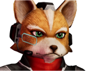
Fox McCloud
LeaderThe leader of the Star Fox team, and the son of James McCloud. Fox led his team after the death of his father, maintaining his posture and his act of responsibility.
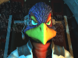
Falco Lombardi
Ace PilotThe ace pilot of the team. He can be a bit short-tempered, but he always helps out his friends.
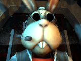
Peppy Hare
Veteran PilotThe original member of the Star Fox team with James and Pigma. After finding out Andross is back, he joined the team with James's son, Fox.
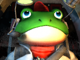
Slippy Toad
EngineerThe engineer of the team. Specializing in weapon upgrades and analyzing weakpoints, but can be a bit too scientific with his words.
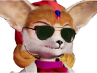
Fara Phoenix
Stunt PilotShe met Fox a while back. She's known as a test pilot for the Cornerian army, until she got fired and worked for the Cornerian Police. She joined the StarFox team to take down Andross.
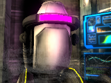
ROBNUS 64
Intelligent SystemAn Artificial System for the StarFox team. Helpful for piloting the Great Fox.
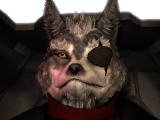
Wolf O'Donnell
LeaderLeader of the Star Wolf team. A well-known rival of Fox and a mercenary. Recently hired to take them out. He was a former pilot in the Cornerian Army, but was dishonorably discharged from service after the Banimus Incident for desertion.
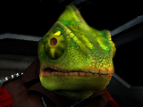
Wolf O'Donnell
LeaderA cold, meticulous assassin with a taste for the hunt. Now a key member of Star Wolf, he relishes outmaneuvering his targets — especially Falco Lombardi..
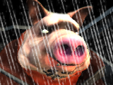
Pigma Dengar
LeaderOnce a founding member of the original Star Fox team, Pigma betrayed his comrades for profit. Greedy, cunning, and self‑serving, he eventually aligned himself with Star Wolf — though even his teammates know better than to fully trust him..
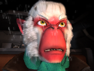
Andrew Oikinny
LeaderNephew of Andross, Andrew seeks to prove himself worthy of his family legacy. Though inexperienced and often underestimated, he is fiercely loyal to Star Wolf and determined to rise above the shadow of his uncle.
Wolf O'Donnell
FighterLittle is known of Oda Fang other than her origins on Titania. She has occasionally worked with Star Wolf over the last decade, and many rumors surround her connection to Wolf O'Donnell.
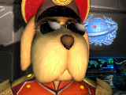
General Pepper
GeneralThe long‑standing commander of the Cornerian Army, General Pepper, is a respected tactician and one of the Lylat System’s most trusted leaders. He personally recruited James McCloud and later entrusted Fox with the defense of Corneria. Pepper serves as the strategic backbone of the war effort against Andross.
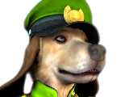
Colonel Shears
GeneralThe second in command of the Cornerian fleet. He's known for his disciplined leadership, sharp tactical instincts, and unwavering loyalty to Corneria. He often oversees large‑scale operations and coordinates frontline units during high‑risk engagements across the Lylat System.